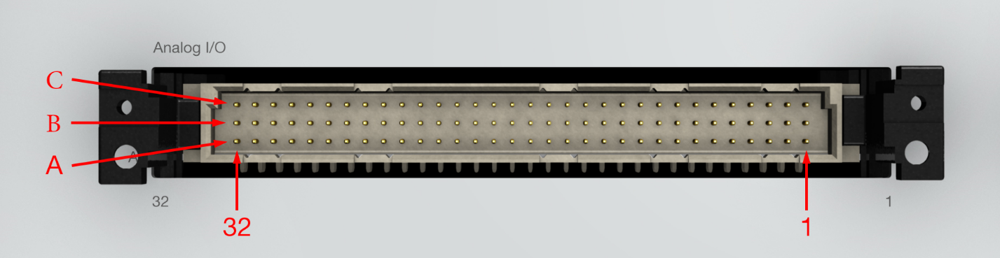
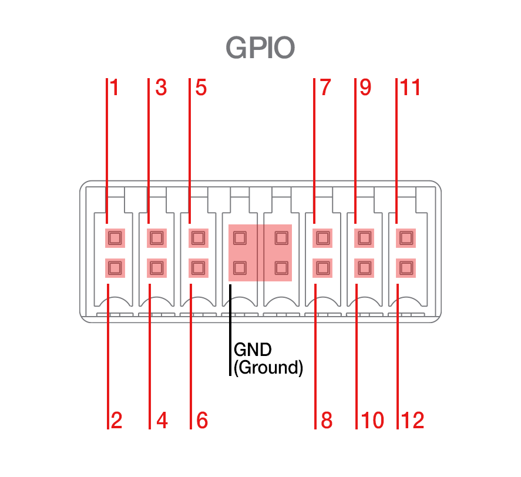
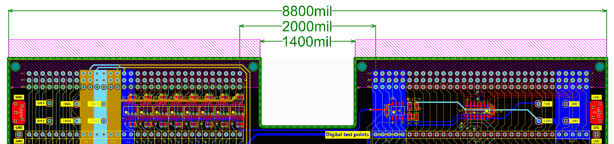

Mechanical
Overview of the physical aspects and interfacing cables of HIL404 devices
Front plate connectors
HIL404 devices feature two DIN41612 male type C connectors. These connectors are marked with a name (e.g. Analog I/O) and a pin number (1 and 32).

GPIO connector
HIL404 devices feature a 16-pin connector on the back of the device. Out of the 16 pins, 12 are used as General Purpose Input/Output and 4 are reserved for GND.
The mating part for this connector is Weidmuller B2CF 3.50/16/180 SN BK BX.

Interfacing via PCB-mount connectors
Interfacing via right-angle female DIN41612 connectors is the recommended way, due to robustness.
To do this method, simply make sure to place up to two right angle female DIN41612 connectors, spaced at 2000mil, pad-to-pad on your custom interface PCB design.

Please contact us if you require a template in Altium format.
Interfacing via 96-pin cables
When direct connection between the HIL and the DUT is not possible, the recommended approach is to use 96 pin cables, purchased from Typhoon HIL, or manufactured from the following parts:
| Description | Manufacturer | Part number | Quantity |
|---|---|---|---|
| Flat cable | 3M | 3849-96 | per desired length |
| DIN41612 female crimp | Yamaichi | FNS13-09600-00BF | 2 |
| (optional) DIN41612 connector backshell | ERNI | 253001 | 2 |